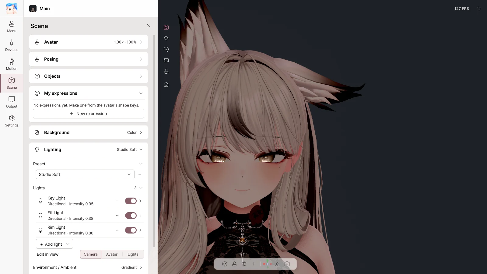

8. Scene#
On the Scene page you set the background, lighting and effects. For posing, objects and My expressions, see Chapter 11.

Avatar#
| Item | What it does |
|---|---|
| Brightness | Overall avatar brightness |
| Size | Avatar size |
| Back to the centre | Move the avatar to the center |
Background#
| Option | Use |
|---|---|
| Color | A background in any color |
| Green / Blue | Chroma key (OBS Chroma Key filter) |
| Transparent | Send a transparent background over Spout2 (shows as black in the window) |
| Image | A PNG / JPG picture background |
Lighting#
Presets#
| Preset | Look |
|---|---|
| Spot Light | Stage lighting on the face (default) |
| Camera Light | Simple lighting from the camera's direction |
| Studio Soft / Studio Bright | Soft / bright studio lighting |
| Face Focus | Focused on the face |
| Flat VTuber | Flat, without shadows |
| Warm Tone / Cool Tone | Warm / cool colors |
| Dramatic | Strong side lighting |
| Scene Lighting | The lighting of the Unity scene the avatar was exported from |
⋯ menu: Save as new · Rename · Update from current lighting · Duplicate · Delete · Reset lighting
Lights#
| Item | What it does |
|---|---|
| Light switch | On / off |
| Intensity · Color · Temperature | Brightness and color |
| Position, direction & target | Where it shines from and what it lights |
| Shadows & range | Shadows and how far the light reaches |
| + Add light | Face light · fill light · rim light · directional · point · spot |
| Edit in view | Move lights directly in the view |
Environment / Ambient#
Sets the brightness and color of the light coming from all directions: Scene sky / Gradient / Flat
Effects#
| Effect | What it does |
|---|---|
| Post-processing | Turn all effects on / off |
| Anti-aliasing | Reduce jagged edges |
| Bloom | Light glow |
| Color grading | Exposure, contrast, saturation, color temperature |
| Vignette | Darken the edges |
| Film grain | Film texture |
| Chromatic aberration | Color fringing at the edges |
| Depth of field | Background blur (Focus on the face) |
| Motion blur | Motion trails |
Shaders#
The shaders on your avatar are used as they are. Checked with major shaders such as Poiyomi and lilToon. AudioLink, mirror and camera detection, and Light Volumes do not work.